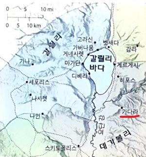

1예수께서 산에서 내려 오시니 수많은 무리가 따르니라
2한 나병환자가 나아와 절하며 이르되 주여 원하시면 저를 깨끗하게 하실 수 있나이다 하거늘
3예수께서 손을 내밀어 그에게 대시며 이르시되 내가 원하노니 깨끗함을 받으라 하시니 즉시 그의 나병이 깨끗하여진지라
4예수께서 이르시되 삼가 아무에게도 이르지 말고 다만 가서 제사장에게 네 몸을 보이고 모세가 명한 예물을 드려 그들에게 입증하라 하시니라
예수님은 단지 기적을 위해 다가오는 무리를 모으기 원치 않으셨으므로 베푸신 기적에 대해 당분간(10:27까지) 비밀로
5예수께서 가버나움에 들어가시니 한 백부장이 나아와 간구하여
6이르되 주여 내 하인이 중풍병으로 집에 누워 몹시 괴로워하나이다
7이르시되 내가 가서 고쳐 주리라
8백부장이 대답하여 이르되 주여 내 집에 들어오심을 나는 감당하지 못하겠사오니 다만 말씀으로만 하옵소서 그러면 내 하인이 낫겠사옵나이다
9나도 남의 수하에 있는 사람이요 내 아래에도 군사가 있으니 이더러 가라 하면 가고 저더러 오라 하면 오고 내 종더러 이것을 하라 하면 하나이다
10예수께서 들으시고 놀랍게 여겨 따르는 자들에게 이르시되 내가 진실로 너희에게 이르노니 이스라엘 중 아무에게서도 이만한 믿음을 보지 못하였노라
11또 너희에게 이르노니 동 서로부터 많은 사람이 이르러 아브라함과 이삭과 야곱과 함께 천국에 앉으려니와
12그 나라의 본 자손들은 바깥 어두운 데 쫓겨나 거기서 울며 이를 갈게 되리라
13예수께서 백부장에게 이르시되 가라 네 믿은 대로 될지어다 하시니 그 즉시 하인이 나으니라
14예수께서 베드로의 집에 들어가사 그의 장모가 열병으로 앓아 누운 것을 보시고
15그의 손을 만지시니 열병이 떠나가고 여인이 일어나서 예수께 수종들더라
16저물매 사람들이 귀신 들린 자를 많이 데리고 예수께 오거늘 예수께서 말씀으로 귀신들을 쫓아 내시고 병든 자들을 다 고치시니
17이는 선지자 이사야를 통하여 하신 말씀에 우리의 연약한 것을 친히 담당하시고 병을 짊어지셨도다 함을 이루려 하심이더라
18예수께서 무리가 자기를 에워싸는 것을 보시고 건너편으로 가기를 명하시니라
19한 서기관이 나아와 예수께 아뢰되 선생님이여 어디로 가시든지 저는 따르리이다
20예수께서 이르시되 여우도 굴이 있고 공중의 새도 거처가 있으되 인자는 머리 둘 곳이 없다 하시더라
21제자 중에 또 한 사람이 이르되 주여 내가 먼저 가서 내 아버지를 장사하게 허락하옵소서
22예수께서 이르시되 죽은 자들이 그들의 죽은 자들을 장사하게 하고 너는 나를 따르라 하시니라
23배에 오르시매 제자들이 따랐더니
24바다에 큰 놀이 일어나 배가 물결에 덮이게 되었으되 예수께서는 주무시는지라
25그 제자들이 나아와 깨우며 이르되 주여 구원하소서 우리가 죽겠나이다
26예수께서 이르시되 어찌하여 무서워하느냐 믿음이 작은 자들아 하시고 곧 일어나사 바람과 바다를 꾸짖으시니 아주 잔잔하게 되거늘
27그 사람들이 놀랍게 여겨 이르되 이이가 어떠한 사람이기에 바람과 바다도 순종하는가 하더라
28또 예수께서 건너편 가다라 지방에 가시매 귀신 들린 자 둘이 무덤 사이에서 나와 예수를 만나니 그들은 몹시 사나워 아무도 그 길로 지나갈 수 없을 지경이더라
29이에 그들이 소리 질러 이르되 하나님의 아들이여 우리가 당신과 무슨 상관이 있나이까 때가 이르기 전에 우리를 괴롭게 하려고 여기 오셨나이까 하더니
30마침 멀리서 많은 돼지 떼가 먹고 있는지라
31귀신들이 예수께 간구하여 이르되 만일 우리를 쫓아 내시려면 돼지 떼에 들여 보내 주소서 하니
32그들에게 가라 하시니 귀신들이 나와서 돼지에게로 들어가는지라 온 떼가 비탈로 내리달아 바다에 들어가서 물에서 몰사하거늘
33치던 자들이 달아나 시내에 들어가 이 모든 일과 귀신 들린 자의 일을 고하니
34온 시내가 예수를 만나려고 나가서 보고 그 지방에서 떠나시기를 간구하더라
